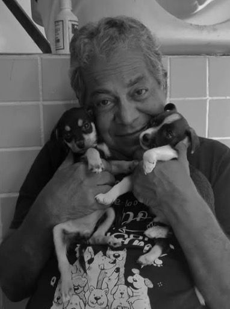
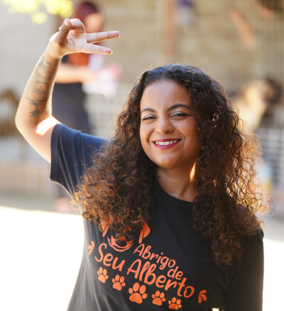
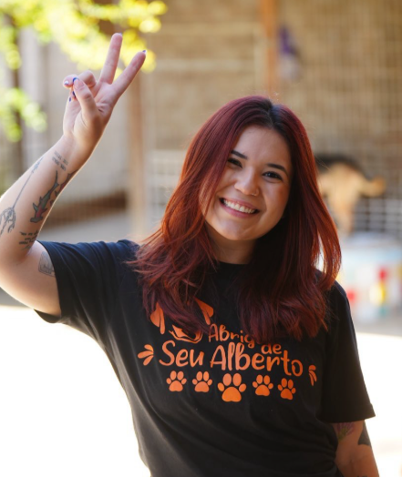
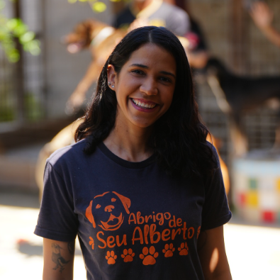
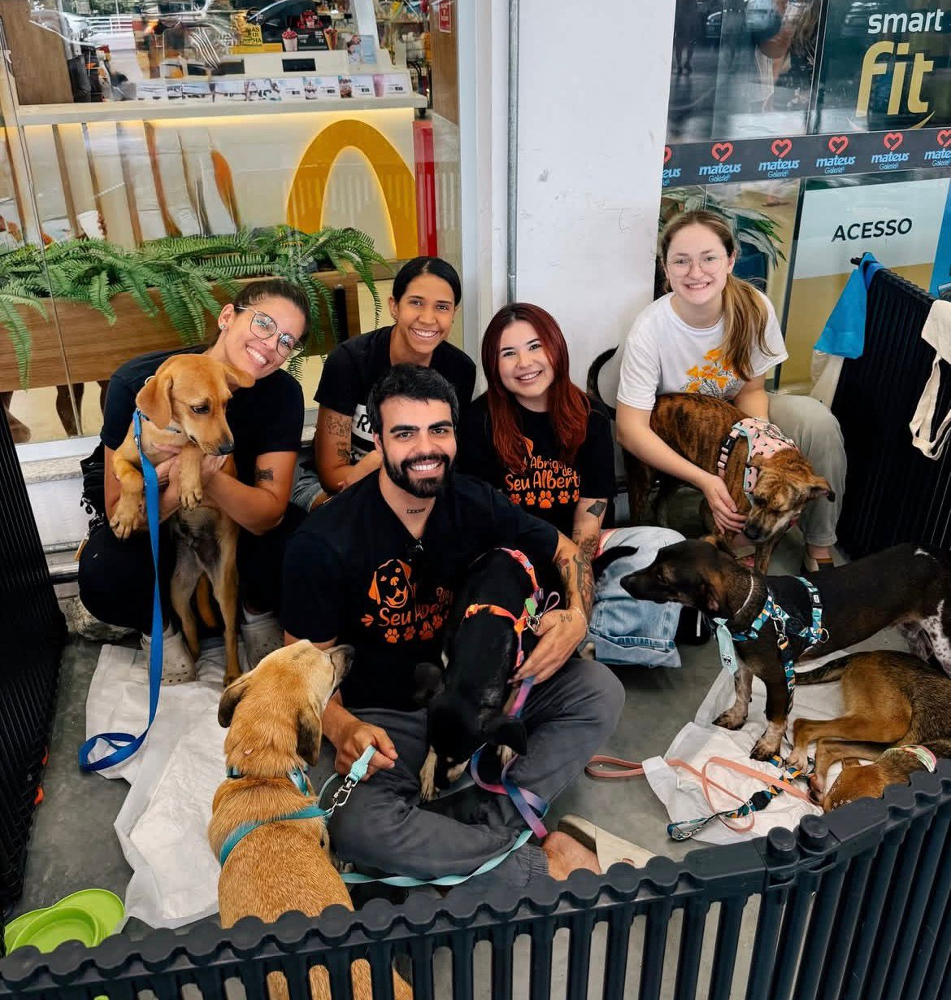

"Uma jornada de amor, dedicação e esperança."
A história do Abrigo de Seu Alberto começou com a compaixão de Alberto Ribeiro Bezerra. Em seu caminho diário para o trabalho, ele encontrava cães abandonados e, mesmo morando com uma tia e tendo apenas dois cachorros, não resistia em trazê-los para casa.
Tudo mudou quando um cachorro doente apareceu em sua porta. Após acolhê-lo, otros animais foram chegando até que, com 16 cães, a situação ficou insustentável. Foi então que, em 2004, Alberto deixou o emprego e fundou o abrigo em Jaboatão dos Guararapes, dedicando-se integralmente à causa animal.
Com doações e ajuda de voluntários, o abrigo se tornou referência em Pernambuco, mesmo enquanto Seu Alberto enfrentava sérios problemas de saúde. Em 2022, quando o espaço correu risco de fechar, a comunidade se uniu em uma vaquinha online para comprar o imóvel e preservar seu sonho.
Após uma longa batalha contra problemas de saúde, Seu Alberto faleceu em 2025, deixando em testamento o desejo de que o abrigo continuasse funcionando. Hoje, seu legado é mantido por 3 mulheres de confiança que trabalhavam com ele, mantendo as portas abertas para cerca de 100 cães.
Ele dizia sempre: "Enquanto eu viver, nenhum animal que cruzar meu caminho ficará sem ajuda." E mesmo após sua partida, seu sonho continua vivo.

Em memória do fundador - Alberto Ribeiro
Seu Alberto nos deixou fisicamente em 2025, mas seu legado vive em cada cão que encontra um lar, em cada olhar que volta a brilhar e em cada voluntário que se inspira em sua história.
"O que mais importa não é o que temos na vida, mas quem temos na vida. E eu tive a sorte de ter centenas de amigos de quatro patas que me ensinaram o verdadeiro significado do amor incondicional."
Mais de 1000 cães resgatados das ruas e de situações de maus-tratos
Centenas de famílias formadas e lares cheios de amor
Sua história inspira dezenas de voluntários que continuam sua missão

"Talita, há 8 anos no abrigo. Chegou num momento de dor pessoal e encontrou ali um propósito. Hoje, é ela quem luta por cada adoção, por cada cãozinho que sai do portão pra nunca mais voltar sozinho. Talita é coração e movimento."

"Gabriela, há 10 anos ao seu lado. Começou com uma visita despretensiosa e se tornou seu braço direito. Hoje, é ela quem cuida da rotina dos cães, da parte administrativa, dos funcionários. Gabriela é força e estrutura."

"Mariana, com quase 8 anos de história. Começou com uma simples visita... e nunca mais foi embora. Discreta, constante, presente em tudo: eventos, decisões, bastidores e nas horas difíceis. Mariana é base e presença."
Momentos que marcaram nossa história
Seu Alberto encontra Thor e começa sua missão de amor. Era apenas o primeiro de muitos.
Com 16 cães resgatados, Seu Alberto oficializa o Abrigo.
Após meses de cuidado, o primeiro cão encontra um lar. As lágrimas de felicidade de Seu Alberto marcaram todos.
O abrigo chega a 50 cães e ganha os primeiros voluntários fixos. Seu Alberto já não estava sozinho na missão.
Mesmo doente, Seu Alberto cuidou dos cães até seu último suspiro. Partiu sabendo que sua obra continuaria.
Hoje, novas responsáveis, voluntários e familiares mantêm vivo o sonho de Seu Alberto. Mais de 100 cães são cuidados com o mesmo amor que ele ensinou.
Honrar o legado de Seu Alberto, continuando seu trabalho com a mesma dedicação, amor e respeito que ele dedicava a cada animal resgatado.
